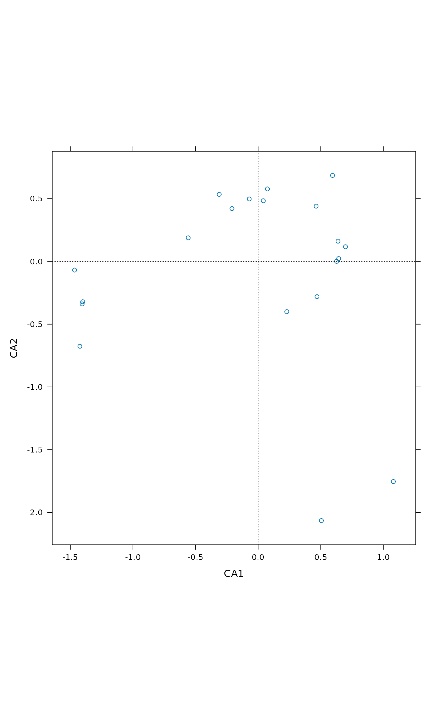

Trellis (Lattice) Plots for Ordination
ordixyplot.RdFunctions ordicloud, ordisplom and ordixyplot
provide an interface to plot ordination results using Trellis
functions cloud, splom
and xyplot in package lattice.
ordixyplot(x, data = NULL, formula, display = "sites", choices = 1:3, panel = "panel.ordi", aspect = "iso", envfit, type = c("p", "biplot"), ...) ordisplom(x, data=NULL, formula = NULL, display = "sites", choices = 1:3, panel = "panel.ordi", type = "p", ...) ordicloud(x, data = NULL, formula, display = "sites", choices = 1:3, panel = "panel.ordi3d", prepanel = "prepanel.ordi3d", ...)
Arguments
| x | An ordination result that |
|---|---|
| data | Optional data to amend ordination results. The ordination
results are found from |
| formula | Formula to define the plots. A default formula will be
used if this is omitted. The
ordination axes must be called by the same names as in the
ordination results (and these names vary among methods). In
|
| display | The kind of scores: an argument passed to
|
| choices | The axes selected: an argument passed to
|
| panel, prepanel | The names of the panel and prepanel functions. |
| aspect | The aspect of the plot (passed to the lattice function). |
| envfit | Result of |
| type | The type of plot. This knows the same alternatives as
|
| ... | Arguments passed to |
Details
The functions provide an interface to the corresponding lattice
functions. All graphical parameters are passed to the lattice
function so that these graphs are extremely configurable. See
Lattice and xyplot,
splom and cloud for
details, usage and possibilities.
The argument x must always be an ordination result. The scores
are extracted with vegan function scores so that
these functions work with all vegan ordinations and many others.
The formula is used to define the models. All functions have
simple default formulae which are used if formula is missing.
If formula is omitted in ordisplom it
produces a pairs plot of ordination axes and variables in
data. If formula is given, ordination results must be
referred to as . and other variables by their names. In other
functions, the formula must use the names of ordination scores and names
of data.
The ordination scores are found from x, and data is
optional. The data should contain other variables than
ordination scores to be used in plots. Typically, they are
environmental variables (typically factors) to define panels or plot
symbols.
The proper work is done by the panel function. The layout can be
changed by defining own panel functions. See
panel.xyplot,
panel.splom and
panel.cloud for details and survey of
possibilities.
Ordination graphics should always be isometric: same scale should be
used in all axes. This is controlled (and can be changed) with
argument aspect in ordixyplot. In ordicloud the
isometric scaling is defined in panel and prepanel
functions. You must replace these functions if you want to have
non-isometric scaling of graphs. You cannot select isometric scaling
in ordisplom.
Value
The function return Lattice objects of class
"trellis".
See also
Examples
ordisplom(ord, data=dune.env, choices=1:2)ordisplom(ord, data=dune.env, form = ~ . | Management, groups=Manure)## Scatter plot with polygons ordixyplot(ord, data=dune.env, form = CA1 ~ CA2 | Management, groups=Manure, type = c("p","polygon"))## Choose a different scaling ordixyplot(ord, scaling = "symmetric")## ... Slices of third axis ordixyplot(ord, form = CA1 ~ CA2 | equal.count(CA3, 4), type = c("g","p", "polygon"))## Display environmental variables ordixyplot(ord, envfit = envfit(ord ~ Management + A1, dune.env, choices=1:3))## 3D Scatter plots ordicloud(ord, form = CA2 ~ CA3*CA1, groups = Manure, data = dune.env)ordicloud(ord, form = CA2 ~ CA3*CA1 | Management, groups = Manure, data = dune.env, auto.key = TRUE, type = c("p","h"))